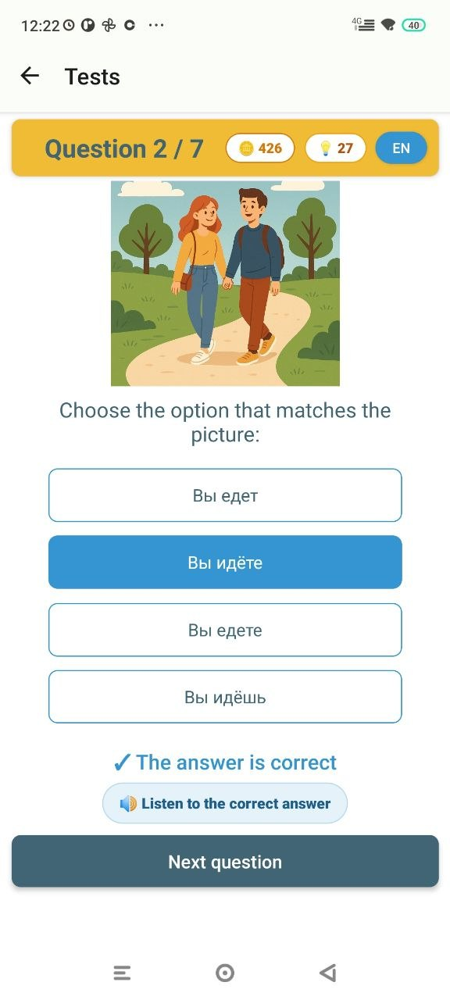
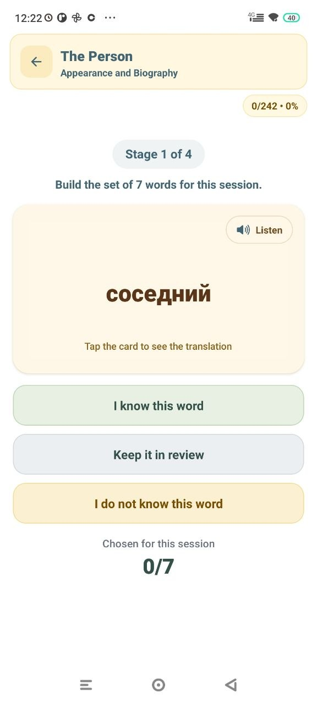

Alphabet & first words
Get familiar with Cyrillic, listen to recorded pronunciation and learn useful vocabulary for your first steps in Russian.
Help, bug reports & ideas: grammilla.academy@gmail.com
Grammilla is a Russian learning app that brings explanations, vocabulary, audio and exercises together — from your first Cyrillic letters to cases and verbs.
Follow guided lessons and explore a learning world inspired by Lukomorye, Russian literature and folklore.
For iPhone, iPad and Android.

Start with the basics or return to a topic you want to understand better. Connect each explanation with examples and practice.
Get familiar with Cyrillic, listen to recorded pronunciation and learn useful vocabulary for your first steps in Russian.
Study Russian cases, verbs and sentence patterns with explanations and examples. Work through a topic at your own pace.
Practise with quizzes and vocabulary training, revisit studied topics and follow your completed lessons and learning streak.
Take a look at real screens from the app on iPad and Android. Open any screenshot for a closer look.

Begin with the Russian alphabet and pronunciation, then build your understanding of cases, verbs and sentence patterns.
The app offers interface and explanations in English, Italian and Russian, so you can learn Russian through a language you already know.
These screenshots show the English interface. Appearance may vary by app version.



Here are two topics you can explore in Grammilla: verbs of motion without prefixes and imperfective vs perfective aspect.
идти — ходить · ехать — ездить
Russian distinguishes going on foot from going by transport. It also distinguishes movement in one direction at a specific moment from repeated or regular journeys.
On foot / by transport
Я сейчас иду в супермаркет. А ты? (I'm going to the supermarket now. And you?)
А я сейчас еду на автобусе в центр. (And I'm going to the center by bus now.)
Идти / ехать are unidirectional; ходить / ездить are multidirectional and can describe repeated or regular movement.
All four are imperfective verbs. This distinction is different from the imperfective / perfective aspect contrast.
НСВ / СВ · process / result
The choice of aspect depends on context and what you want to express. Compare two examples from the app's lesson on infinitives:
Imperfective — focus on the process
Я хочу говорить по-русски. (I want to speak Russian.)
Perfective — focus on the result
Я хочу сказать тебе правду. (I want to tell you the truth.)
Process / result is a useful starting point, not the whole rule. Grammilla also covers other contexts, including perfective verbs with по- for an action done for a while.
Short examples adapted from Grammilla's verbs of motion and verb aspect lessons. Continue in the app for the full explanations and practice.

Russ with Love
Native Russian teacher · Grammilla co-creator
Get to know one of the people behind Grammilla. Explore Russian grammar, everyday phrases and TORFL preparation with Liuba — and keep your Russian going beyond the app.
All links open in a new tab.
Yes. Grammilla has lessons on verbs of motion without prefixes, including идти / ходить and ехать / ездить, and on imperfective and perfective aspect. See examples from these topics.
Yes. The app offers interface and explanations in English, Italian and Russian. You can also leggere questa pagina in italiano.
Yes. You can begin with the Russian alphabet, pronunciation and introductory vocabulary before moving on to grammar and practical language topics.
Yes. Use topic-based lessons and exercises to revisit rules, practise Russian cases and verbs, and strengthen your vocabulary.
Grammar and vocabulary practice can support your preparation for TORFL / TRKI. Use it alongside the exam requirements and other study materials for your level.
You can start as a guest. Sign in if you want to sync your progress with your account.
Grammilla is available on the App Store for iPhone and iPad and on Google Play for Android.